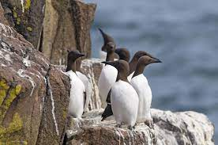
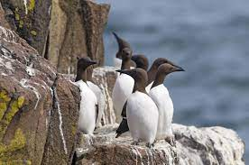
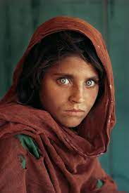
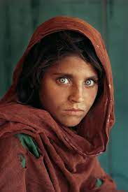

Meet
Professional
Photographer


 



 

Malcolm Lismore, a skilled photographer based in the picturesque landscapes of Scotland, offers a diverse range of services capturing the essence of various moments through his lens. Specializing in Landscape, Wildlife, Wedding, Special Event, and Portrait photography, Malcolm brings a unique perspective and artistic flair to each of his projects.
1. Landscape Photography:
Malcolm's expertise in landscape photography allows him to showcase the breathtaking beauty of Scotland's natural scenery. From rolling hills to serene lochs, his images capture the essence of the landscape in every season, providing clients with stunning, timeless visuals.
2. Wildlife Photography:
As an avid nature enthusiast, Malcolm excels in wildlife photography, immortalizing the diverse fauna of Scotland. His patience and keen eye allow him to capture the grace and beauty of various creatures in their natural habitats, creating evocative and captivating images.
3. Wedding Photography:
Malcolm specializes in documenting the most special day in a couple's life – their wedding. With a keen sense of storytelling, he captures the genuine emotions, candid moments, and intricate details that make each wedding unique. His goal is to provide couples with a beautiful visual narrative of their love story.
4. Special Event Photography:
Whether it's a corporate gathering, a family reunion, or a milestone celebration, Malcolm is adept at capturing the essence of special events. His unobtrusive approach ensures that he documents the significant moments without disrupting the flow of the occasion, resulting in a compelling collection of memories.
5. Portrait Photography:
Malcolm's talent extends to the realm of portrait photography, where he skillfully captures the personality and essence of his subjects. Whether it's an individual portrait, family photo, or professional headshot, his artistic vision ensures a striking and personalized representation of each person.
Malcolm Lismore's photography services are characterized by a commitment to professionalism, attention to detail, and a passion for storytelling through visual imagery. Clients seeking a photographer in Scotland can rely on Malcolm to deliver high-quality, emotive photographs that capture the spirit of the moment, making each image a cherished keepsake.